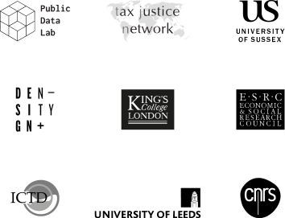

Investments going through and
Estimated value (75% confidence band)
Level of uncertainty
An Atlas of Offshore FDI
"An Atlas of Offshore FDI" explores financial relations between states through the flows of money from foreign direct investment (FDI). Its specificity is the effort to visualize the combinations and modifications of the flows of money for making sense of transnational economic activity as well as visual practices for representing uncertainty. While public data practices often emphasise and value the production of certainty , this project considers what data projects may learn from diverse cultures for visually representing, managing and articulating uncertainty.
It is a research project done in collaboration with the Tax Justice Network, a network of researchers and research centres, and the Public Data Lab. The experimental visual model is designed and developed by DensityDesign Research Lab.
How to manipulate the chart
Click on direct or undirect investments for additional information.
Click on Countries (like Source, conduits, and Destination) to see their location and additional information about them.
Drag the Countries to move them on the screen.
Select one or more Countries in the Conduits filter to see FDI passing through them.